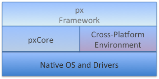

Spark (aka pxscene)
View the Project on GitHub pxscene/pxscene
pxscene stable
Installer: OSX | Windows | Release Notes
| Platform | OS | RAM | Disk Space | Processor Speed |
|---|---|---|---|---|
| Mac OS | Macbook Pro (macOS Sierra) | 256 MB | 24 MB | 1 GHz |
| PC | Windows 10 (Build 15063) | 128 MB | 24 MB | 1 GHz |
Welcome to home of the px framework
px is a framework for creating cross platform UI applications using JavaScript modules, with primary goals of creating light weight reusable components and applications that work in a browser like environment.
A high level representation of the px stack is shown below.

The stack components.
- Native OS and graphic drivers - provides specific kernal, OS and UI services for the native system
- pxCore - provides UI scene and primitive components used by the px Framework to render components. Most of pxCore is creating using C++, with JavaScript bindings to its UI API.
- Cross-Platform Environment - provides asynchronous runtime services required by applications, such as http access, task scheduling, etc. The initial implementation is based on Node-JS and Chrome's V8 JavaScript engine. However, this may vary based on the target platform.
- px Framework - provides the public JavaScript API for creating reusable UI modules and applications, in addition to the facilities for loading and launching px-based application modules.
The pxscene API
pxscene supports a set of widgets and functions for application authoring via its bindings to JavaScript. The supported APIs are documented here:
Simple Hello World Example
The following code example is a minimal module covering the traditional "Hello, World" that many tutorials use as the initial presentation.
// scene object is provided to the module when it is created
scene.create({
t:"text", // Element type will be text
parent: scene.root, // Parent element
text:"Hello, World!", // the text
x:100, y:100, // position
textColor:0xff0000ff, // RGBA - red text
pixelSize:64}); // font height
The Hello World example will produce the example screen shown below.

Frameworks documentation